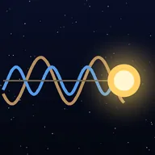
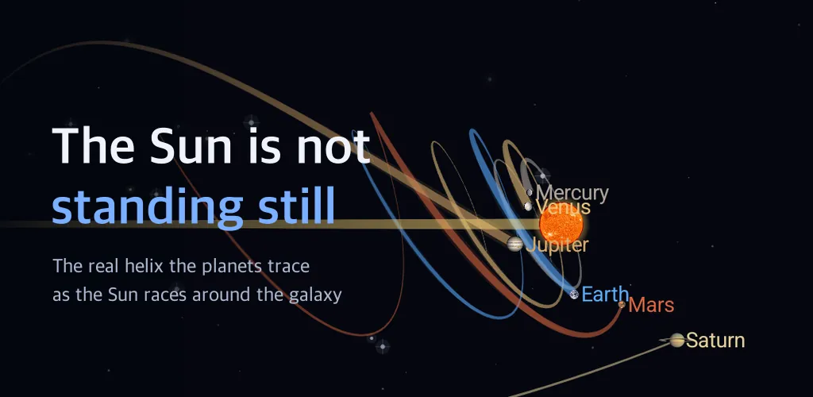
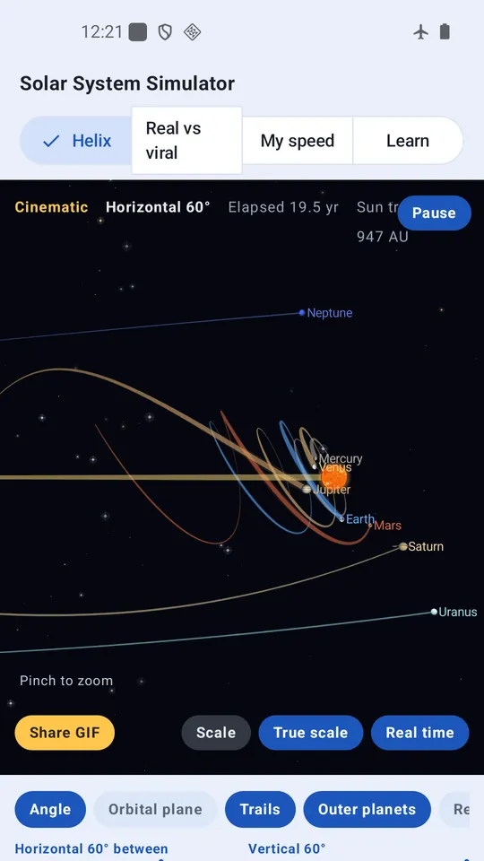
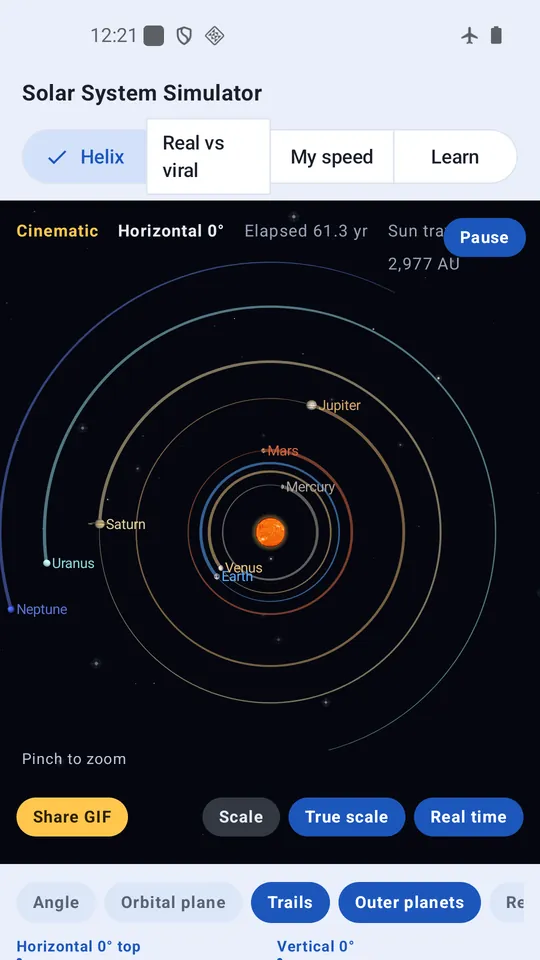
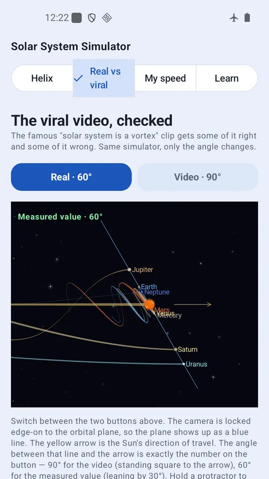
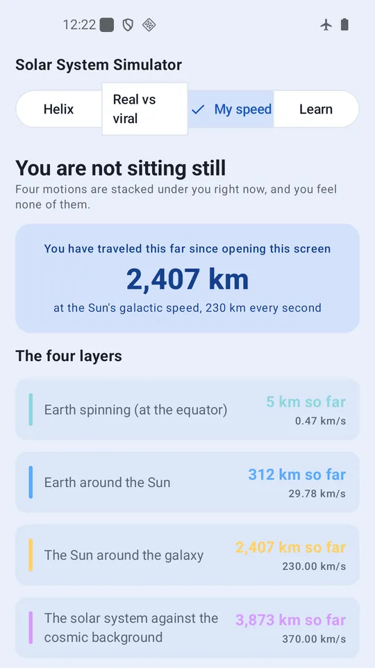
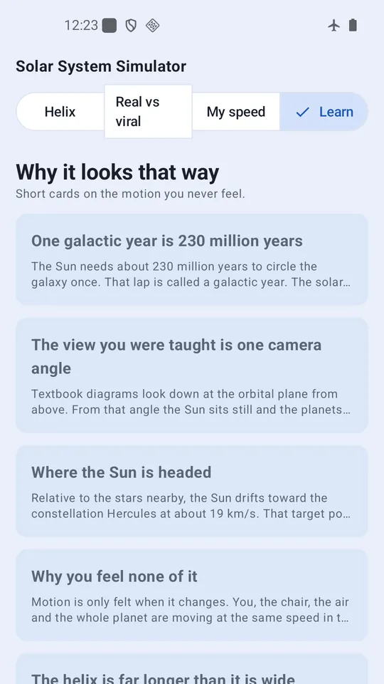

Solar System Simulator: Helix
Planets trace a helix as the Sun races around the galaxy. Turn it with a finger.






About this app
The solar system diagram you learned is one camera angle. Looking straight down at the orbital plane, the Sun sits still and the planets run in neat circles. Nothing about that drawing is wrong. It simply leaves out where the whole system is heading.
The Sun orbits the center of the galaxy at about 230 km/s. One lap takes roughly 230 million years, a span called a galactic year. Trace where a planet has actually been, measured against the galaxy, and the path is not a circle but a long stretched helix.
Tilt the camera and the circle unwinds
Move the horizontal and vertical sliders. The familiar concentric circles unwind into a helix. The Angle button travels between the two views for you. Pinch to zoom and drag with one finger to pan. Raise the time speed and decades pass in seconds; tap Real time and one second becomes one second, so the picture stands still while the Sun still covers 13,800 km every minute.
That famous vortex video, checked
You have probably seen the clip claiming the solar system is a vortex. Part of it is right and part of it is not. The Sun really is moving and the paths really are helical. But the orbital plane does not stand at a right angle to the direction of travel. The measured angle is about 60 degrees, and the helix is stretched far longer than it is wide rather than coiled tight like a spring. Switch between the two angles in the app and compare them yourself.
Your speed, right now
Sitting perfectly still, four motions are stacked under you. Earth spinning at 0.46 km/s, Earth orbiting the Sun at 29.8 km/s, the Sun circling the galaxy at 230 km/s, and the whole solar system moving at roughly 370 km/s against the cosmic microwave background. A live counter shows how far you have traveled since opening the screen. Enter your birthday and the app turns your lifetime distance into a card you can share.
Why it looks that way
Short cards cover the galactic year, where the Sun is headed, why none of this speed can be felt, and why inner and outer planets trace such different shapes.
About the numbers
Sizes and distances are exaggerated so they fit on a screen. Tap True scale to drop the compression and draw the real ratio; every body then becomes a dot, because with Neptune's orbit filling the screen the Sun is 0.17 pixels across. Orbital periods, however, are exact. The speed difference between planets is what makes the helix twist, so bending those numbers would make the picture a lie. The current scale is always visible in the app.
You can turn what you are looking at into a 3 second animated GIF and share it.
Works with no internet connection. Every calculation runs on your device and no personal data is collected. Free with ads.
Figures follow NASA planetary fact sheets and IAU values. The app places measured numbers side by side and does not pass judgment on any particular video or its author.
Android · free with ads · Developer: RealTunaLove · Store listing in 17 languages
Background story: why I built it